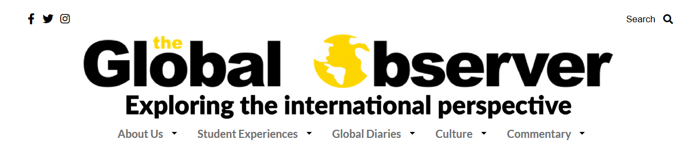

As a journalism student, Jin keeps a humble Wordpress blog and publishes some of his research, observations and multimedia projects. The blog can be found HERE.
Currently, he is also a writer for Northeastern University's new international student magazine, the Global Observer, which can be found HERE.
The header of the Global Observer website.
In particular, Jin is curious of the relationships between Asian American identities, cultural diaporas and their future influence in the world. He believes that his multicultural and multilingual experiences, studies in computer science as well as game design, allow him to observe from a perspective that may differ from traditionally trained journalists.

Jin worked together with a professional illustrator in the ambitious WANDERLUST project, successfully Kickstarted at the end of 2017.
As the entire anthology focused on the themes "Quests and Journeys", the story "Plum Rain" tells of the ancient Sillan warriors of South Korea, the Hwarang and of otherworldly spirits commonplace in Korean mythology. As the story writer of the comic, Jin was responsible for delivering narrative and scripting the panels in the comic accordingly.


A peek at some of the published comic with the story concept introduction.
When possible, Jin also works on personal writing projects. The themes he enjoys writing about most usually involve Korean or Japanese mythology, sci-fi or even a mix of both.